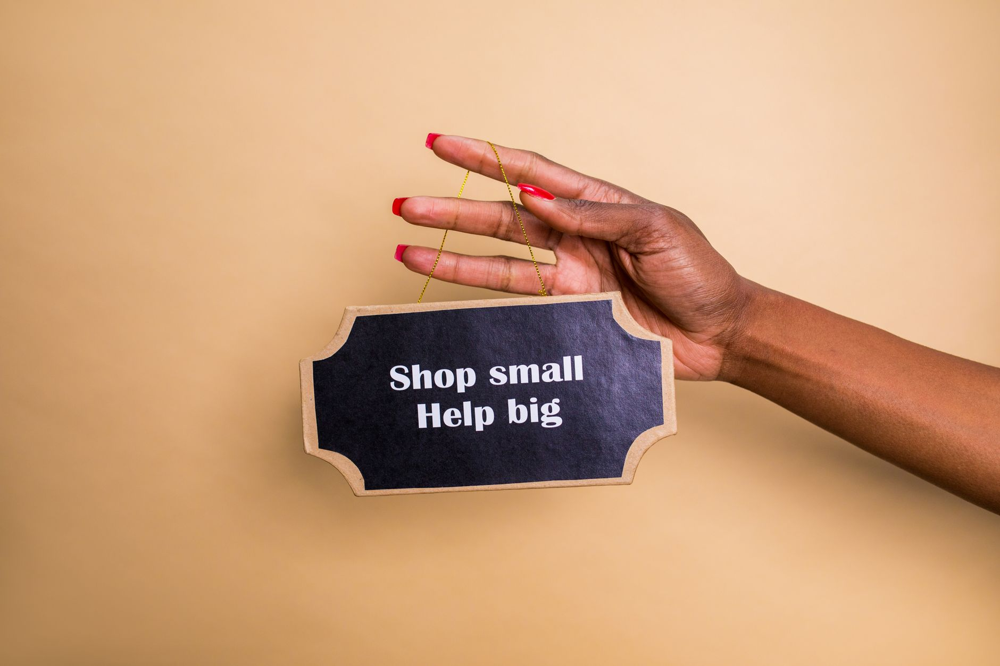

Are you struggling to get more customers to your physical store or service area? Facebook advertising can be a powerful tool for local businesses. This guide shows you exactly how to start running effective Facebook ads to attract customers right to your doorstep. We will walk you through setting up your first campaign, finding the right people, and making sure your ad spend actually brings in sales for your local business.

Understanding Local Facebook Advertising Basics
Facebook advertising is a platform for connecting with people based on their interests, location, and behaviors. For local businesses, this means focusing your ads on people who live near you or work in your specific service area. You do not need to be a tech expert to start. Think of Facebook Ads as a targeted digital storefront. You choose what you want to show and who you want to see it.
The core concept is simple: define your ideal customer. Who needs your product or service most right now? Are you targeting homeowners in a specific zip code? Are you looking for local contractors? Knowing this helps you build a precise audience. This focus prevents you from wasting money showing ads to people who will never buy from you.

Setting Up Your First Facebook Ad Campaign
Starting your first ad campaign involves a few straightforward steps. First, you need a Facebook Business Page. This page acts as your online presence. Next, you will create an Ad Account. This is where you manage your budget and ads. Then, you build your ad. You decide on your goal. Do you want people to visit your website, call you directly, or send a message?
For beginners, start with a simple objective. A "Traffic" objective is great for driving people to your local website. Another good option is "Messages," which lets people talk to you instantly through Facebook Messenger. Keep your initial setup small. Spend a small amount first to learn the system. This allows you to test what works before committing larger budgets.
Targeting Your Local Customer Audience Effectively
This is the most important part of local advertising. You must tell Facebook exactly where to show your ads. Use location targeting to narrow your reach. You can target specific cities, neighborhoods, or even a radius around your physical location. For example, if you own a coffee shop, target people within a five mile radius of your shop.
Beyond location, use detailed interests. If you sell specialized gardening supplies, target users interested in gardening, local landscaping, or specific types of plants. Facebook allows you to layer these interests. Combine location with a specific hobby or job title. This precision ensures your ad reaches people who have a genuine need for what you offer.
Creating Compelling Facebook Ad Creatives
Your ad creative is what people actually see. This includes the photo or video and the text you write. For local businesses, authenticity works best. Show your team, show your shop, or show the quality of your product in use. Avoid generic stock photos. Use real pictures of your customers or your local environment.
Your ad copy needs to speak directly to your local audience. Use language that resonates with people in your community. Instead of saying, "We offer great services," try, "Need a reliable plumber in the downtown area? Call us today." Keep the message short and focused on a clear benefit for the local customer.
Budgeting for Local Facebook Ads Success
Don't spend money without a plan. Start small. A common mistake is putting too much money into the first ad. You need a testing budget. Allocate a small, consistent daily budget for the first two weeks. This budget allows the algorithm time to learn who responds well to your ads.
Consider this: a small, consistent daily spend can yield better results than a large, sporadic spend. For instance, if you test three different offers, give each one a set budget for a week. This structured approach helps you see which offer performs best before scaling up.
Measuring Key Performance Indicators for Local Ads
You must track what matters. For local ads, focus on metrics that show real local action. Look at click-through rates. This tells you if your ad creative and message are interesting enough to stop someone scrolling. Another key metric is the cost per lead or cost per message. This shows you how much it costs you to get someone to take the next step.
Compare your results. If you are running multiple ads, compare their performance side by side. You need concrete numbers to make decisions. For example, if Ad A costs $5 per lead and Ad B costs $12 per lead, you know Ad A is more efficient for your budget.
Optimizing Your Facebook Ads for Local Results
Optimization is the process of making your ads better over time. Based on your measurement, you need to adjust. If a specific image gets high engagement, create more variations of that image. If a certain time of day brings in more clicks, schedule your ads for those hours.
You can also adjust your targeting based on what you learn. If people in a certain neighborhood respond better than others, shift your budget toward that area. This iterative process of testing, measuring, and adjusting is how you improve your local ad performance.
Troubleshooting Common Local Facebook Ad Issues
Ads sometimes behave unexpectedly. One common issue is low engagement. This often means your creative is not resonating with the local audience. Try changing the photo or video entirely. Another problem is high costs. This usually points to overly broad targeting. Tighten your location or narrow your interest groups.
If you see very few clicks, check your ad delivery status. Sometimes Facebook limits reach if your budget is too low or your ad is too generic. Always check the ad manager dashboard for specific error messages. Knowing how to fix these small problems quickly keeps your campaign running smoothly.
Scaling Your Local Facebook Advertising Strategy
Once you find an ad that consistently brings in good results, it is time to scale. Do not just increase the budget randomly. Instead, scale by duplicating your winning ads. Take the best-performing ad and give it more budget. This allows Facebook to find even more people who match that successful ad.
If you have proven success with one service area, try expanding to a slightly larger geographic area. Use the data you collected to justify the increased spend. Scaling should always be based on proven performance, not just guesswork.
Long-Term Growth with Facebook Ads for Local Business
Running Facebook ads is not a one-time fix. It is a continuous process of improvement. Keep monitoring your KPIs regularly. The local market changes, and your competitors change. Be ready to pivot your strategy.
Focus on building relationships with the customers you acquire through these ads. Happy local customers become your best source of future referrals. Use the data from your ads to inform your overall business strategy. Keep learning, keep testing, and keep growing your local presence.
Ready to start attracting more local customers? Set up your Facebook Business Page today and start testing your first campaign.
Related
- How To Respond To Negative Google Reviews
- How To Ask Customers For Google Reviews
- How To Get More Google Reviews For Your Business
Read next: How To Respond To Negative Google Reviews